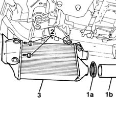

1048B50 turbo charger intercooler - r + r
- Path
- Procedures > 10 ENGINE UNIT > 1048 ENGINE AIR SUPPLY CIRCUIT > 1048B pressure air circuit > 1048B50 turbo charger intercooler - r + r
- Kind
- repair procedure (removal / refitting; the operation number is the code)
- Applies to
- engines: 1.9 JTD 8V; all production periods
- Interactive page
- https://sloeber94.github.io/elrnDB-fMltpl/en/#/2891394
Applies to: engines: 1.9 JTD 8V; all production periods
 Removing
Removing
 Refitting
RefittingPlace the car on a ramp.
4450B10 Front WHEEL (one) - R.R.
7055B42 Additional FRONT WHEEL ARCH (one), left or right - R.R.
1. Remove clamp (1a) and disconnect turbocharger air line (1b).
2. Unscrew the retaining bolts and nut.
3. Remove the air exchanger with shroud.

Applies to: engines: 1.9 JTD 8V; all production periods
Refitting
RemovingCheck the condition of the exchanger.
Tighten the retaining bolts and nut.
Connect the air pipe to the turbocharger using a new clamp.
7055B42 Additional FRONT WHEEL ARCH (one), left or right - R.R.
4450B10 Front WHEEL (one) - R.R.
Remove the vehicle from the ramp.